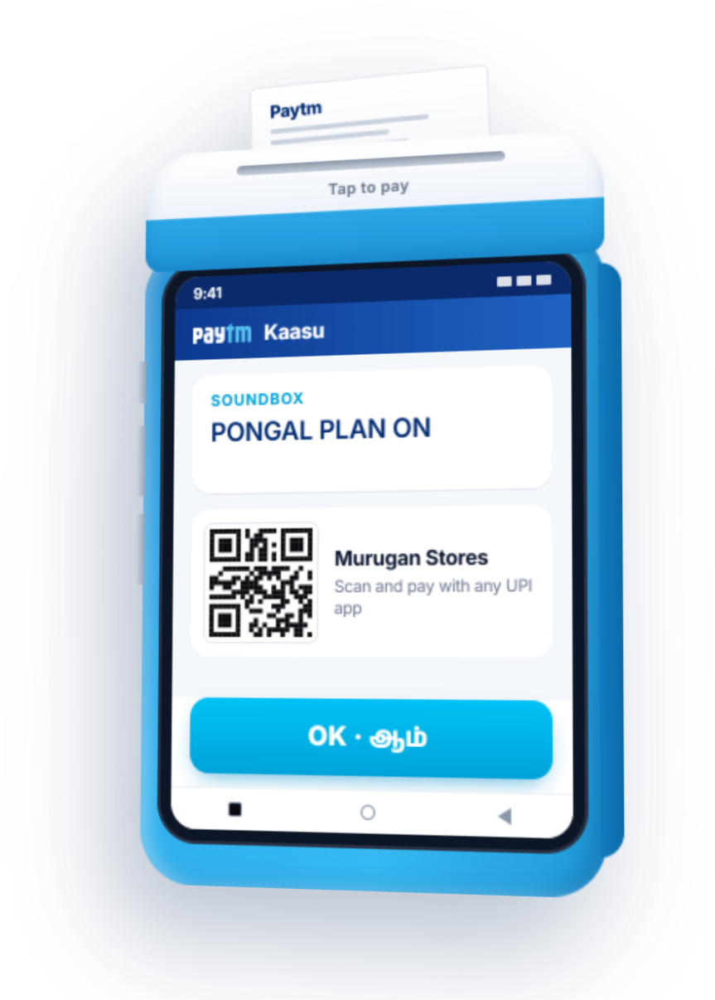
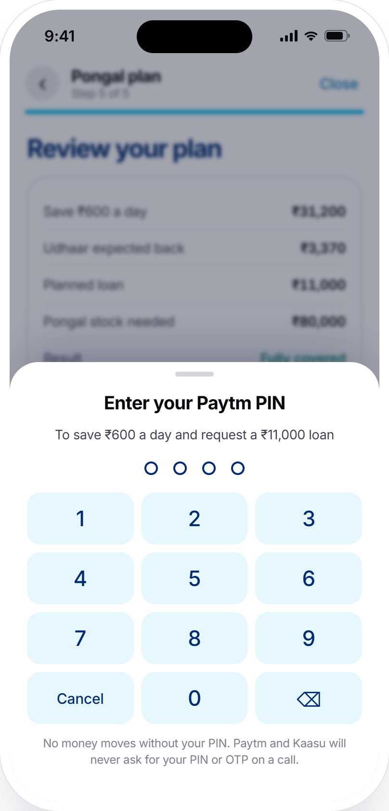
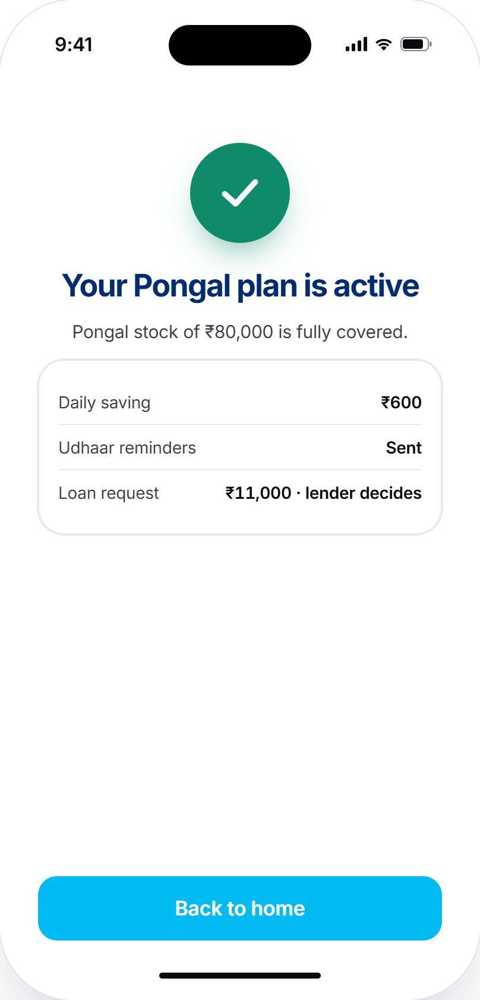

Paytm Buildathon · Chennai · Track 1: Merchant Growth AI
How Kaasu works
The problem we solve, why it matters, how the product works step by step, what is new and what already exists.
Prepared for Dheena Dhayalan R · 15 November 2026

1The one-minute version
Kaasu (காசு, Tamil for money) is an AI cash planner that lives on the Paytm Soundbox and in the Paytm for Business app. It looks at a shop's Paytm payments, sees a big expense coming weeks ahead, and helps the owner be ready for it.
The rule it follows: own money first, borrow only the gap. Kaasu first plans small daily savings and collects money customers owe. Only what's still missing becomes a small, planned loan from a regulated lender. Every rupee moves only after the owner enters his UPI PIN.
₹32,520How short Murugan will be for Pongal stock, found 53 days early
₹11,000His planned loan, instead of ₹35,000 borrowed in a panic
₹0New hardware. It runs on the Soundbox already on 1.64 crore counters
2The problem in detail
Murugan runs Murugan Stores in Velachery, Chennai. He sells about ₹11,240 a day, mostly through his Paytm QR code. On paper his shop is healthy. Yet on the days that matter most, his money isn't there.
"வியாபாரம் நல்லா இருக்கு. ஆனா தேவைப்படும் நாள்ல பணம் இல்ல." "Business is good. But the money isn't there on the day I need it."
Profit is not the problem. Timing is.
A shop can be profitable and still run out of cash, because money comes in a little every day but goes out in big lumps. Pongal stock (rice, jaggery, ghee, sugarcane and more) costs ₹80,000 and must be paid to the distributor on 6 January, weeks before the festival sales arrive.
₹80,000Needed on 6 January
₹47,480What he'll have at today's pace
−₹32,520The shortfall
53 daysTime left to fix it
Four reasons the money runs out
Cause
What happens
Festivals come early
Stock is paid weeks before festival sales arrive, so a big bill lands when the cash box is lowest.
Profit goes home
Every Sunday the family takes the week's profit for household needs. Nothing is kept aside for the big bill.
Udhaar stays unpaid
Udhaar is informal credit: regulars take goods now and pay later. Murugan is owed ₹4,820, but asking neighbours for money feels rude, and they "might get offended and move to another store" (shop owner quoted in Business Today).
Credit comes late and costly
When the bill arrives, he borrows in a panic, often from moneylenders or at the worst price, and borrows more than he needs (₹35,000).
Today's tools don't fix this. Paytm's Soundbox announces "money received", and the new AI Soundbox can answer "how much did I sell today?". But nothing looks ahead and says: "In 53 days you will be short. Here is how to fix it, starting today."
3Why it is important
For India's kiranas
91%of India's grocery is still sold by kiranasRedseer estimate, 2025
52%of kiranas saw food and FMCG sales fall as quick commerce growsPwC × Kirana Club, 508 retailers
82%of buyers moved at least a quarter of their kirana shopping onlineDatum Intelligence survey
14%of small businesses (MSMEs) reach formal credit2026 industry report
₹25–30 lakh crMSME credit gap: money small businesses need but can't borrow formallyOutlook Business, 2025 estimates
22%of kiranas plan any tech spend, because tools are costly and complexCPM India, 4,593 retailers
Kiranas are under pressure from quick commerce, they are shut out of formal credit, and they don't adopt complicated apps. A planner that speaks Tamil on a device they already own removes all three barriers.
For Paytm
1.64 croreSoundboxes on counters, up 27 lakh in a yearPaytm Q2 FY27
4.9 croreregistered Paytm merchants; ₹7.1 lakh crore of payments a quarterPaytm Q4 FY26, Q2 FY27
85%of Paytm merchant loans went to merchants with Paytm devicesReported for Q2 FY26
The device is the relationship. Paytm's CEO has said Paytm is building AI agents that act as a small shop's "COO, CFO or CMO", with subscription and AI fees. Kaasu is a working picture of that CFO. It makes Soundboxes more useful every day, sends Paytm's lending partners smaller and safer loans, and creates a paid AI tier.
For customers, helpers and lenders
Customers keep their dignity: reminders come from Paytm, on their payday, not from the shopkeeper. Helpers get wage advances without a moneylender. Lenders get borrowers who already save daily, which lowers risk.
4How Kaasu works, step by step
Here is one morning at Murugan Stores, 53 days before Pongal.
Sense. Kaasu reads what Paytm already knows: daily QR payments, the udhaar list, and the festival calendar. Murugan types nothing.
Forecast. The cash engine projects his balance to 6 January: he'll have ₹47,480 against ₹80,000 needed.
Plan. It builds the cheapest fix in a fixed order: his own savings first, then udhaar collection, then a loan for whatever is left.
Ask. At 7 am the Soundbox speaks in Tamil: "You'll be ₹32,520 short. Shall I keep ₹600 aside every day?"
Say yes. He says "aam" (yes) to an AI Soundbox, or taps OK on the screen. Voice and buttons only say yes. They never move money.
Confirm with PIN. His phone asks for his UPI PIN. Nothing moves without it. Any loan first shows a Key Fact Statement (all costs in plain words) and asks for consent.
Act. ₹600 is auto-saved every night at 9 pm into a savings pot at Paytm's partner bank. Paytm schedules udhaar reminders for each customer's payday. The ₹11,000 loan request goes to a regulated lender.
Watch and adapt. If three customers don't pay, Kaasu notices, shows the new gap, and offers a fix: save a little more, adjust the loan, or remind them once more. The Pongal plan stays on track.
The plan

PIN confirms

Plan active
5The maths, in plain words
Every number comes from a plain, explainable calculation in code (the cash engine, sim.js), not from AI. That makes it predictable and auditable.
Shortfall = needed on 6 Jan − money at today's pace
= ₹80,000 − ₹47,480 = ₹32,520
1. Own savings = ₹600 a day × 52 days = ₹31,200
2. Udhaar = expected back on customers' paydays = ₹3,370
3. Gap loan = rounded up, with a ₹2,000 safety buffer
= ₹11,000, repaid ₹190 a day from 17 January (60 days)
Without Kaasu = the whole gap plus a buffer, borrowed in a panic = ₹35,000
Safety checks built in
Check
Rule
Can he afford the loan?
Daily repayment is compared with daily collections: up to 5% is comfortable, up to 10% is tight, above 10% is blocked.
Save Score
Regular savers build a score (730 in the demo) that partner lenders can use to offer a lower rate (1.2% a month in the demo).
Keep-back
A safe minimum always stays in his account, so a plan never leaves him unable to buy daily stock.
6Where AI is used, and where it is not
AI does
How it stays safe
Writes the Tamil and English brief
Google Gemini turns the engine's facts into warm, natural Tamil. A guardrail checks every number in the AI's text against the engine's facts and rejects anything that doesn't match.
Answers questions ("Can I buy a fridge for ₹18,000?")
The answer is grounded in the same facts. In the live app it said the fridge would drop him below his safe limit and risk the Pongal plan.
Reads distributor bills
Gemini Vision reads a photo of a bill into a table. The engine then checks each line against the distributor's schemes and found ₹446 of missed discounts in the sample.
Speaks
Text-to-speech in Tamil. If Gemini is down, Sarvam AI (an Indian-language model) takes over. If both fail, the app keeps working with text.
AI never decides money. It only explains. Maths decides the numbers, the merchant decides yes or no, and the PIN moves the money.
7All nine features
Feature
What it does
Who gains
Pongal pre-bookingNew
Regular customers pre-pay a festival hamper (₹1,200, ₹150 a week). Payments settle to the shop the next day, so customers fund part of the stock. Refund if not delivered.
Shop: less borrowing. Customer: a festival deal.
Buy togetherNew
Four neighbouring shops pool their orders to reach the distributor's bulk price (6% off, ₹1,295 saved).
Small shops get big-shop prices.
Check a billNew
AI reads distributor bills and finds discounts the shop was promised but didn't get.
Money the shop already earned.
Save ScoreNew
Daily saving builds a score that partner lenders can use for cheaper loans.
Shop: lower rates. Lender: lower risk.
Rain ShieldNew
On an IMD red alert for his pin code, when his sales and his neighbours' sales drop, repayments pause for 3 days and a ₹3,000 insurance payout arrives. No claim form.
Protection when Chennai floods.
Payday udhaarNew
Paytm, not the shop, reminds each customer on the day they usually get paid, with a one-tap pay link.
Shop gets paid; nobody loses face.
BharosaExtends existing
Customers confirm each udhaar entry in their Paytm app, so there are no disputes. For trusted customers, Paytm Postpaid's lending partner pays the shop today (₹2,577 in the demo), and the customer repays the lender in 30 days. The shop vouches but never guarantees.
Shop: cash now. Customer: a credit trail.
Staff advanceExtends existing
A helper asks the Soundbox for an advance. The owner approves with PIN, it's paid from his savings with no interest, and it's recovered on payday, within the legal 50% limit.
Helpers avoid moneylenders.
Galla checkExtends existing
At closing time the owner says the cash count. Kaasu compares it with expected cash (₹3,260) and spots patterns, such as being short only between 6 and 9 pm, without blaming anyone.
Fewer leaks, no accusations.
The galla is the shop's cash drawer. "New" means we found no earlier Paytm hackathon entry or product doing this (checked 15 Nov 2026).
8Architecture and technology
UsersSoundbox (voice, OK button) · Paytm for Business app (journeys, PIN) · customers' Paytm app · helpers
→
Paytm platformSoundbox fleet with its own 4G SIM and over-the-air updates · merchant account · UPI and payment aggregator · notifications
→
Kaasu serviceCash engine · planner · AI layer · guardrail and consent log
The Soundbox and the app never talk to each other directly. Both talk to Paytm's servers through the same merchant account, so a "yes" on the Soundbox and a PIN on the phone join up there. Older Soundboxes without a microphone use the OK button instead of voice.
Layer
What we used in the prototype
App and device
HTML, CSS and JavaScript; the Soundbox and phone are drawn in code; Tamil font Anek Tamil
Server
Node.js 24 with no framework; endpoints for brief, ask, voice, bill and health; deployed on Vercel
Cash engine
Plain JavaScript rules (sim.js), shared by the app, the server and the deck
AI
Google Gemini Flash (text), Gemini Vision (bills), Gemini TTS (voice); Sarvam AI as the Indian-language fallback; voice cached so it isn't regenerated
Testing
Playwright walks every journey in Chrome and reports errors
In production
A Soundbox firmware update plus a module in the Paytm for Business app; Paytm's own Indian-language model (Pi) could cut AI cost
9RBI rules and other regulations
Paytm acts as the distributor and technology layer. Regulated banks, NBFCs and insurers hold the money, lend and insure.
Part
Rule
How Kaasu complies
Planned loan
RBI Digital Lending Directions 2025
Paytm is the lending service provider. KFS with APR before signing, a cooling-off period, money paid straight to the shop's bank and repaid straight to the lender, with no pool account.
Savings pots
Only banks may take deposits
Pots are the shop's own RD or sweep account at a partner bank. Paytm Payments Bank cannot take new deposits after RBI's 2024 action, so it is not used.
Pongal pre-booking
Payment Aggregator Master Direction, Sep 2025
Payments settle to the shop the next banking day (T+1) and are never held in escrow. It is an advance for goods, not a deposit with returns.
Bharosa
Digital lending and credit reporting
The customer's own Postpaid loan, with KFS and consent, paid to the shop as the end-beneficiary. The lender reports to credit bureaus.
Reminders
DPDP Act 2023, TRAI DLT
Customer opt-in; each customer sees only their own amount; not debt collection.
Rain Shield
IRDAI, lender terms
Cover from a licensed insurer; the repayment pause is written into the loan's KFS.
Staff advance
Code on Wages 2019
The shop's own money; deductions within 50% of wages, with the helper's consent.
Every payment
RBI additional factor of authentication
UPI PIN for every transaction; voice and buttons only say yes.
Checked against law-firm summaries of the RBI directions. Paytm's legal and compliance team should confirm details such as cooling-off days.
10What already exists, and what is new
We checked 12 earlier Paytm Build for India entries and about 45 products before building.
Player
What they do today
Gap Kaasu fills
Paytm AI Soundbox
Answers sales and collection questions in 11 languages
Answers, but doesn't plan or act
BharatPe assistant
Gemini-based agent in the business app; some support tasks
No cash planning, no udhaar
PhonePe Business
Payments and loans (₹50,000 to ₹7 lakh); PhonePe Khata shows udhaar to customers
No per-entry confirmation, no plan
OkCredit, Khatabook
Digital udhaar ledgers with reminders sent in the shop's name
Reminders come from the shop, not on payday
Square, Shopify, Toast (US)
AI agents that watch operations and act
Not in India; no festival or udhaar logic
Pine Labs agents
Gemini agents on card machines for engagement and ads
Not focused on the shop's own cash
Money SOS (Paytm Mumbai 2026 winner)
Plans a cash gap: insurance, then savings, then credit
Kaasu adds the festival pot, udhaar and Soundbox voice
Paytm Postpaid
Buy now, pay later through a lending partner (relaunched Sep 2025)
Bharosa turns existing udhaar into Postpaid, with the customer's consent
What is truly new: planning the shop's cash weeks ahead, own money first and a loan only for the gap, spoken in Tamil on the device already on the counter, with Paytm (not the shop) asking customers for udhaar. No other product covers all four of these: answering, acting, bringing money in, and planning ahead.
11How Paytm makes money
Revenue stream
Assumption
Per shop, per year
Kaasu AI plan
₹49 a month
₹588
Loan distribution fee
30% of shops take an ₹11,000 loan; about 3% fee
₹99
Bharosa partner fee
About ₹2,600 of udhaar moved a month; 2%
₹624
AI and voice cost
Cached briefs, about ₹15 a month
−₹180
Net
At 10 lakh shops: about ₹131 crore revenue, ₹113 crore after AI cost
₹1,131
All prices, take rates and adoption figures are our assumptions, to be tested in a 1,000-shop Chennai pilot. Other gains, such as more UPI on Paytm, insurance commission and deposit referrals, aren't counted.
12Words used in this document
Kirana
A small neighbourhood grocery shop.
Udhaar
Informal credit: a regular takes goods now and pays later.
Galla
The shop's cash drawer.
Soundbox
Paytm's counter device that announces payments; newer AI models have a touchscreen and a microphone.
KFS
Key Fact Statement: a one-page summary of a loan's full cost (APR), required by RBI before signing.
LSP
Lending service provider: a platform like Paytm that distributes loans for a regulated lender.
NBFC
Non-banking financial company: a regulated lender that isn't a bank.
T+1
Settled one banking day after the transaction.
AutoPay / e-mandate
A standing instruction, set up once with the UPI PIN, for regular payments such as daily saving.
DPDP Act
India's Digital Personal Data Protection Act, 2023: data is used only with consent.
Sources: Paytm quarterly results Q4 FY26 and Q2 FY27; Redseer; NPCI via Inc42; PwC × Kirana Club via Upstox; Datum Intelligence; CPM India via Mediabrief; AICPDF via Business Standard; Outlook Business; Business Today; RBI Digital Lending Directions 2025; RBI Payment Aggregator Master Direction 2025; RBI FAQ on Paytm Payments Bank 2024. Research done 14–15 November 2026.